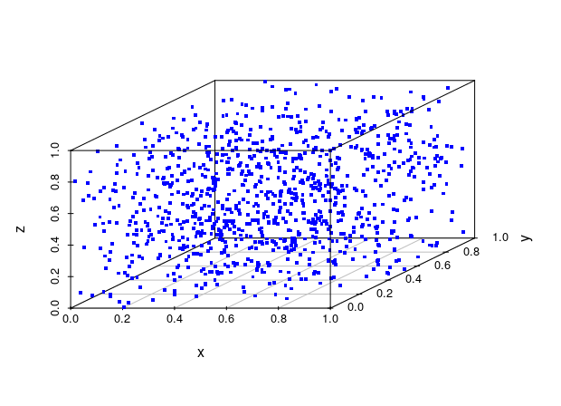
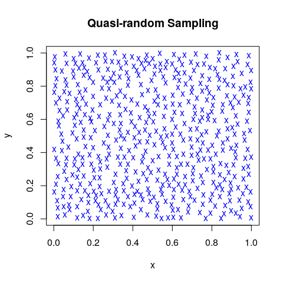

Heidelberg, February 2019
(Pseudo-)Random number generators in Base R
RNGkind(kind = "default", normal.kind = NULL) set.seed(seed) # i.e., seed <- .Random.seed runif(n) # or: rnorm(n); rexp(n) sample(x, size, replace = FALSE, prob = NULL)
Wichmann-Hill: \(6.9\cdot10^{12}\); Marsaglia-Multicarry: \(1.1\cdot10^{18}\)
Super-Duper: \(4.6\cdot 10^{18}\); Mersenne-Twister: \(\approx 10^{6000}\)
Knuth-TAOCP-2002: \(6.8 \cdot 10^{38}\); L’Ecuyer-CMRG: \(3.1\cdot 10^{57}\)
Recommended ‘help’ pages:
?Random # details on RNG in R, 'kinds', 'seeds', etc. ?Random.user # user-supplied random number generation
dqrng: Fast pseudo-random number generator
dqrunif()`, `dqrnorm()`, `dqrexp() dqset.seed()`, `dqRNGkind(kind = "Mersenne-Twister")
64-bit Mersenne-Twister, pcg64,
Xoroshiro128+, Xoshiro256+ (defaults in Erlang and Lua),
Threefry (64 bit engine provided by sitmo)
qrng: Quasi-random numbers in high dimensions
korobov(n, d = 1, generator, randomize = FALSE)
ghalton(n, d = 1, method = c("generalized", "halton"))
sobol (n, d = 1, randomize = FALSE, skip = 0)
Developed specifically for Monte-Carlo applications
Pseudo-random numbers
are sequences of numbers whose statistical properties approximate the properties of theoretical random number sequences.
Quasi-random numbers
are ‘low-discrepancy sequences’, that is the proportion of numbers falling into an arbitrary subset is close to the measure of that subset.
True random numbers
are generated from physical processes that are known to behave like statistically random ‘noise’ signals.
random
RANDOM.ORG “samples atmospheric noise via radio tuned to an unused broadcasting frequency together with a skew correction algorithm by John von Neumann.”
library(random); N = 10000 # maximum request rn <- randomNumbers(n = N, min = 0, max = N, col = 2)/N
qrandom
ANU Quantum Random Number Generator “generates true random numbers in real-time by measuring the quantum fluctuations of the vacuum.”
library(qrandom); N = 10000 # maximum request: 10^5 [1024] rn <- qrandomunif(n = N, a = 0, b = 1)
If \(u\) are uniformly distributed random numbers (in \([0, 1]\))
and \(F\) is a cumulative distribution function, then the numbers
\(F^{-1}(u)\) are random numbers in this statistical distribution.
Example: Normal (Gaussian) distribution
( with mean = 0.0 and sd = 1.0)
x <- runif(1000)
xn <- qnorm(x) # qnorm() is the inverse of pnorm()
summary(xn)
## Min. 1st Qu. Median Mean 3rd Qu. Max. ## -3.06333 -0.67881 -0.03556 -0.01626 0.65103 2.91529
Alternative: Ziggurat algorithm
randaes (2012)
cryptographic random number generator, based on AES
rngwell19937 (2014)
long period linear random number generator WELL19937a
rstream (2017)
streams of random numbers from different sources
Tinflex (2017)
generator for arbitrary distributions with piecewise
twice differentiable densities
UnivRNG and MultiRNG (2018)
uni-/multivariate random number generation for quite
a number of different distributions
?Random.user
“Function RNGkind() allows user-coded uniform and normal random number generators to be supplied.”
dyn.load("<user.lib>")
RNGkind(kind = "user-supplied")randtoolbox
Toolbox for pseudo and quasi random number generation
rngtools
Utility functions for working with RNGs
setRNG
for compatibility with former S versions
Congruential random number generation
\[x_{i+1} = (a x_i + c)\,\mathrm{mod}\,m\]
e.g., m = 2^32, a = 1103515245, c = 12345 or m = 2^31 - 1, a = 48271, c = 0 (Lehmer RNGs)
Knuth-TAOCP-2002
\[x_i = (x_{i-37} + x_{i-100})\,\mathrm{mod}\,2^{30}\] (and discard the first 2000 numbers)
See also the randtoolbox vignette, Dutang and Würtz (2009)
A note on random number generation
Knuth-TAOCP-2002 – an R Implementation
randTAOCP <- function(seed = NULL) {
local({
R <- vector(mode = "numeric", length = 2000)
R[1:100] <- qrandom::qrandomunif(n = 100, a = 0, b = 1)
for (k in 101:2000)
R[k] <- (R[k-37] + R[k-100]) %% 1
k <- 2000; i <- 2000 - 37; j <- 2000 - 100
frand <- function() {
k <<- (k %% 2000) + 1
i <<- (i %% 2000) + 1
j <<- (j %% 2000) + 1
z <- (R[i] + R[j]) %% 1
R[k] <<- z
return(z)
}
return(frand)
})
}
RDieHarder
R Interface to the ‘DieHarder’ RNG Test Suite
Not even ‘Mersenne Twister’ satisfies all these tests!
Birthday spacing test
Random Walk tests
Search for lattice structure (in all dimensions)
Mitchell’s best-candidate algorithm for Poisson disk distribution
Definition (Pearson 1905)
A random walk consists of a succession of random steps on some discrete grid. An elementary example is the symmetric random walk on the integers that starts at 0 and at each step moves +1 or −1 with equal probability.
Theorem (Polya 1921).
A symmetric random walk in one or two dimensions will return
to its starting point almost certainly (i.e., with probability 1).
Applications in
Queing models, Brownian motion, stock markets, animal behavior, risk analysis, diffusion processes, game theory, …
Random walks are fundamental for Markov processes.
Goal
Problem
Find enough nontrivial random walks returning to 0
Or: What is the probability that a random walk returns to 0 after at most n steps?
rwalk <- function(N, M) {
result <- rep(0, N)
for (i in 1:N) {
steps <- 2
a <- if (dqrunif(1) >= 0.5) 1 else -1
a <- a + if (dqrunif(1) >= 0.5) 1 else -1
while (a != 0) {
steps <- steps + 2
a <- a + if (dqrunif(1) >= 0.5) 1 else -1
a <- a + if (dqrunif(1) >= 0.5) 1 else -1
if (steps >= M) break
}
result[i] <- steps
}
result
}
Discussion on other, more compact approaches ?
N <- 10000; M = 2048
result <- numeric(100)
for (i in 1:100) { # 100 simulation runs
no_steps <- rwalk(N, M) # vector of step lengths
r <- rle(sort(no_steps)) # 'run length encoding'
x <- r$values # steps
y <- cumsum(r$lengths)/N # probability
ind <- which(y > 0.975)[1] # where is p > 0.975
result[i] <- x[ind] # store no. of steps
}
summary(result)
## ...
Repeat this for different uniform RNGs in rwalk()
Simulate 100 times and compute the 97.5% level:
10000 random walks – stopping at length 2048
# with `runif()` > summary(result) ## Min. 1st Qu. Median Mean 3rd Qu. Max. ## 684 959 1018 1038 1120 1476 # with `dqrunif()` > summary(result) ## Min. 1st Qu. Median Mean 3rd Qu. Max. ## 752 941 1013 1025 1108 1320 # with `randTAoCP()` > summary(result) ## Min. 1st Qu. Median Mean 3rd Qu. Max. ## 806 944 1003 1026 1098 1302
The probability for returning to zero for the first time after exactly 2n steps is: \[P(W = 2n) = {2(n-1) \choose n-1} \frac{1}{2^{2(n-1)}} \frac{1}{2n}\]
n <- 1:512 a <- choose(2*(n-1), n-1)/2^(2*(n-1))/(2*n) w <- c(0, cumsum(a)) cbind(2*c(510:512), w[510:512])
## [,1] [,2] ## [1,] 1020 0.9749989 ## [2,] 1022 0.9750234 ## [3,] 1024 0.9750478
choose() does not work for bigger numbers.
We need to aply the ‘arbitrary-precision’ package gmp.
n <- 1:3185 b2 <- as.bigz(2) A <- chooseZ(b2*(n-1), n-1)/(b2^(b2*(n-1))*(b2*n)) W <- c(0, cumsum(as.numeric(A))) cbind(2*c(3182:3185), W[3182:3185]) ## [1,] 6364 0.9899971 ## [2,] 6366 0.9899987 ## [3,] 6368 0.9900002 ## [4,] 6370 0.9900018
Package V8 provides an embedded JavaScript engine
(On Linux, the user needs to install libv8-dev)
Since version 2.0 (2019-02-07) it supports ECMAScript 6
i.e., version 6 that implements, e.g., ‘collections’
library(V8); js <- v8()
js$console()
js$eval("<JS code>")
js$source("<file.js>")
js$assign("var_name", <R object>)
js$get("var_name")
js$call("<JS function>", <args...>)
Objects will be exchanged using the JSON format.
function rwalk(N, M) {
var result = new Array(N)
var a = 0, steps
for (var i = 0; i < N; i++) {
steps = 2
if (Math.random() >= 0.5) {a = 1} else {a = -1}
if (Math.random() >= 0.5) {++a} else {--a}
while (a != 0) {
steps += 2
if (Math.random() >= 0.5) {++a} else {--a}
if (Math.random() >= 0.5) {++a} else {--a}
if (steps >= M) break
}
result[i] = steps
}
return result
}
Find probabilities with 1 million random walks:
library(V8)
js <- v8()
# js$eval("function rwalk(N, M) { ... }")
js$source("rwalk.js") # user system elapsed
system.time( # 1.845 0.101 1.933
js$eval("var noStepsJS
noStepsJS = rwalk(10^6, 10^4)
undefined") )
noStepsR <- js$get("noStepsJS")
...
## No. of steps for p >= 0.975: 1020
## No. of steps for p >= 0.990: 6380
Package JuliaCall provides an R interface to Julia,
a high-performance language for numerical computing.
Stable version 1.0 (2018-08-08) is backward-compatible.
library(JuliaCall); julia_setup()
julia_console()
julia_source("<file.jl>")
julia_command("<Julia code>")
julia_eval("var_name")
julia_assign("<var_name>", <R object>)
julia_call("<Julia function>", <args...>)
Objects will be exchanged using R6 and the JSON format.
rwalk = function(N, M)
result = zeros(Int, N)
for i in 1:N
steps = 2
rand() >= 0.5 ? a = 1 : a = -1
rand() >= 0.5 ? a += 1 : a -= 1
while a != 0
steps += 2
rand() >= 0.5 ? a += 1 : a -= 1
rand() >= 0.5 ? a += 1 : a -= 1
if steps >= M; break; end
end
result[i] = steps
end
return result
end
library(JuliaCall)
julia_setup()
js$source("rwalk.jl")
julia_command("rw = rwalk(10, 10);") # compile function
system.time(
no_steps <- julia_eval("rwalk(1000000, 10000)") )
## user system elapsed
## 0.330 0.008 0.338
...
## No. of steps for p >= 0.975: 1020
## No. of steps for p >= 0.990: 6348